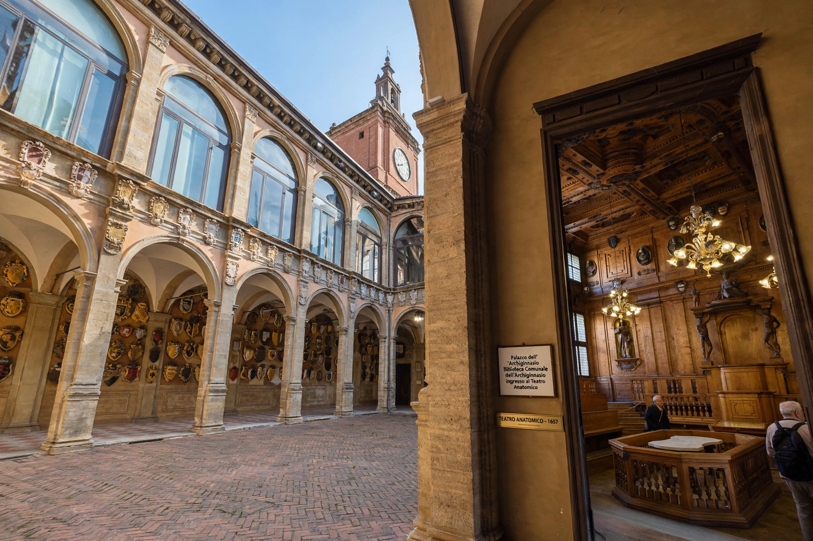

From Wikipedia, the free encyclopedia
| University of Bologna | |
|---|---|
 | |
| Motto | Alma mater studiorum ("Nourishing mother of studies") |
| Founded | 1088 |
| Type | Public research university |
| Location | Bologna, Emilia-Romagna, Italy |
| Students | ~90,000 |
The University of Bologna (Italian: Università di Bologna) is a public research university in Bologna, Italy. Founded in 1088 by an organised guild of students (universitas scholarium), it is the oldest university in continuous operation in the world and the first degree-granting institution of higher education.
Bologna became famous for teaching Roman and canon law: Irnerius revived the study of Justinian's Corpus Juris Civilis, and Gratian compiled the Decretum there around 1140. Students organised into "nations" and hired and fined their own professors — the original student-controlled university model. Emperor Frederick Barbarossa granted scholars protections in the Authentica habita (1158). Alumni include Dante, Petrarch, Erasmus and Copernicus.
The university is one of Italy's largest, with campuses in Bologna, Cesena, Forlì, Ravenna and Rimini, and a branch in Buenos Aires. It gave its name to the Bologna Process (1999), the European reform harmonising degree structures across the continent. Its historic seat includes the Archiginnasio palace and one of the oldest anatomical theatres.
Graduates and teachers include popes, the physician–anatomist tradition of Mondino, novelist Umberto Eco (a long-time professor), and former Italian prime minister Romano Prodi.